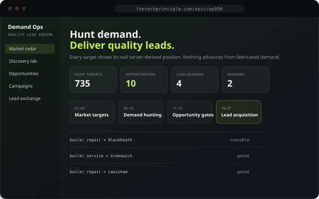

Intelligent platforms · not an industry specialism
We build intelligent platforms that automate complex processes.
From discovering demand and generating leads to content distribution, websites,
data analysis and trading systems, we design and build automation platforms
that turn complex workflows into scalable systems. The industry a platform is
deployed into is the configuration, not the expertise.
Six platformsReusable engines, each deployable across markets and clients
One architectureCapability → platform → application → deployment, every time
A live systemThe Distribution Engine already runs the demand-to-content loop in development
Evidence, not claimsArchitecture, workflow and status shown on every platform page
A live estate under active development, not a closed archive.
What we do
Six platforms that compound on each other.
Each platform is a reusable engine. Capabilities, AI, automation, data, APIs,
workflow orchestration, combine into a platform; the platform is then configured
for a particular application, market or client. The industry is the deployment
context, never the core expertise.
01
Lead Generation
Automates the path from discovering demand to creating measurable opportunities.
Demand discovery, content, distribution and capture as one connected system.
Demand and pain-point discovery
Content creation and distribution
Lead capture, qualification and attribution
Multi-channel campaign landing pages with UTM-level attribution
Feedback-driven optimisation
What we build toward
A repeatable engine that finds demand and converts it, not a single campaign.
02
Demand Intelligence
Discovers what people, markets or customers want and turns those signals into
structured intelligence that feeds lead generation, content, product and
distribution decisions.
Search and question discovery
Pain-point and opportunity detection
Trend and market monitoring
Prioritisation for downstream systems
What we build toward
A single intelligence layer other platforms draw on, instead of one-off research.
03
Website Automation
Website generation, rebuilds and AI enhancement as part of a larger automation
capability, not a standalone design service.
Website generation and rebuilds
AI search visibility and AI assistants
Booking, callback and conversion systems
Built-in analytics
What we build toward
A site that is one node in a bigger automation system, not the whole engagement.
04
Content & Distribution
Demand-led topic discovery through to content generation, video automation and
multi-channel publishing, with attribution and feedback closing the loop.
Demand-led topic discovery
Content and video generation
Multi-channel publishing and distribution intelligence
Traffic attribution and feedback
What we build toward
Content that is routed by evidence of demand, not a publishing calendar.
05
Trading Systems
Not a claim of expertise in every market, an engineering capability for
organising trading intelligence, comparing strategies and automating execution
and monitoring workflows.
Strategy discovery and directory intelligence
Signal generation and backtesting
Execution automation
Risk, drawdown and performance monitoring
What we build toward
Systems that keep their promises after the backtest is over.
06
Business Automation
Customer interaction, appointment booking, qualification and the operational
workflows around them, automated end to end.
AI assistants and customer interaction
Appointment booking and callback workflows
CRM and pipeline workflows
Notifications and reporting
What we build toward
Operational load taken off a team, with a visible audit trail.
How we work
Problem to platform. No theatre.
Not a workflow we describe in a pitch deck, one we actually run, on every
build, that leaves a record behind. Plan, design, implementation: each stage has its
own discipline, and each one is enforced by a skill, not a good intention.
Every task becomes a timestamped, documented record with a required evidence
section built in from the start, not filled in after the fact, and
moves through a real lifecycle: backlog, in progress, complete.
02
Design
Non-trivial work gets a real process map before it gets built: a top-down hierarchy
of nodes, each with its own completion test, so the build has a spec to be checked
against, not just a memory of what was intended.
03
Build
Multiple models can work the same codebase without corrupting each other's changes, coordinated through a shared, append-only message board instead of luck.
04
Prove
Every claim of "done" needs typed evidence attached, a test result, a live
URL, a log, graded against what it actually proves. A task isn't complete
because someone said so; it's complete because the evidence says so.
Case studies
Inside the builds.
Not a list of apps, proof we know how to build an ecosystem. Every one below is
standalone, but they share infrastructure: one strategy directory across the trading
estate, one CRM across the directory & leads estate. Real hosted apps, verified on
mobile, as they stand today, not a demo reel.

·Lead Generation
Demand Hunt
Finds real, server-derived demand before a campaign spends a penny, then runs
the full lead lifecycle from opportunity gate to delivery. Standalone tool; also the
front door that feeds qualified demand into the wider distribution engine.
Every strategy ranked by net return after real costs, recalculated live from closed
trades, never a backtest curve. Standalone research tool; also the shared
source of truth every other app in the estate reads from.
A trading floor where participant-owned agents allocate a simulated dollar between
Directory strategies and watch each other do it, every decision logged, no
real money at risk. Standalone spectacle; also where a Finder match or a fantasy
portfolio actually goes to run.
Describe what you need in plain English; it searches the Directory, ranks the
matches and hands the reference straight to an agent. It doesn't trade, it finds and hands off. Standalone search tool; also the entry point into the
Arena and the Fantasy Challenge.
Build a fantasy portfolio from real Directory strategies, back your own picks
against everyone else's, and send the winner into the Arena as an agent.
Human-first, preview-only demo, standalone game; also a second on-ramp
into the same live strategy data.
A real local business directory, 1,498 businesses across 51 categories and
48 towns, paired with a local news feed that drives claim-and-quote traffic
straight back into it. Behind the public site, a full CRM runs the pipeline end to
end: import, field validation, a claims step that captures real owner consent, then
generation, a live site built only once a business has claimed its listing.
It's not a standalone product; it's shared lead-management infrastructure any of our
apps can tap into to acquire and qualify leads, the same way the trading estate
shares one strategy directory.
The infrastructure behind every build on this page: an append-only, timestamped
record that lets independent models, Claude, Gemini, Codex, Hermes, work the same codebase without corrupting each other's changes. Not a demo: the
Demand Hunt deployment above was root-caused and shipped through 21 of these
messages between Claude and Hermes, live, the same day it went out.
A multi-tenant assistant that lives on a client site, answers real questions and
captures leads. The owner gets a traffic dashboard behind it, summary stats,
and a demand-signal view that flags above-baseline interest in specific services so
they can react in real time: launch a promotion, and the assistant surfaces it live
in the chat widget itself, with impressions, clicks and conversions tracked back.